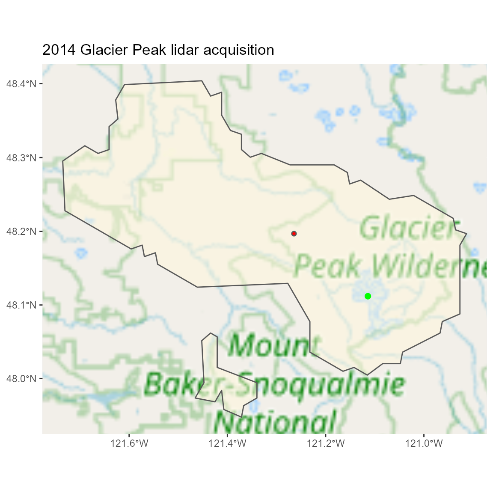

USGSlidar – Basics
Robert J. McGaughey
2021-06-04
my-vignette.RmdOverall Goal
The USGSlidar package was developed to make it somewhat easy to query the collection of lidar data available from the U.S. Geological Survey’s 3D Elevation Program (and other sources) to find out if data are available for specific locations of interest. The package accesses some of the project and tile index files available from 3DEP and uses them to search for data. The package also provides links to lidar data files that can be downloaded for free directly from 3DEP servers.
The package also facilitates access to the USGS lidar collection maintained in Entwine format. This collection contains a subset of the data available from USGS but it is constantly being updated to match the data available in the national map. The index for the Entwine collection does not contain detailed project information so there is extra effort required to marry the Entwine index with information in the USGS 3DEP collection.
Example 1 – Query USGS Entwine lidar collection
Using the USGS Entwine data collection, query for coverage for a buffered point location. The Entwine data collection is in the web mercator projection (EPSG:3857). The point coordinate is also in the web mercator projection. The point is buffered using a circular buffer with a radius of 500m.
The Entwine data collection can be accessed using PDAL to retrieve data for specific areas of interest without needing to know the structure of the data (tile arrangement or tile naming). Unfortunately, the Entwine index file contains very few details for each acquisition so it is hard to find data for specific years. Other USGS data collection contain this information. I have developed R code that matches index files from the data hosted on the rockyftp server with the projects in the Entwine collection to produce a new index file that can be used with the USGSlidar package. This index is hosted here. The second example uses this enhanced index.
The example point is located within the 2014 Glacier Peak lidar acquisition in Washington state, USA.
This example will download the Entwine index produced by Howard Butler into the current working directory.
# retrieve the entwine boundary index and store in current directory
fetchUSGSProjectIndex(type = "ENTWINE")
# query to find the project polygon(s) that covers the buffered point
# the return value is the project area polygon(s) that intersect buffered point
project_polys <- queryUSGSProjectIndex(-13499097
, 6139669
, buffer = 500
, shape = "circle"
, crs = "EPSG:3857"
)
# now query to get the sample area attributed with the project polygon information
# this is the same call as above but with return="aoi"
point_poly <- queryUSGSProjectIndex(-13499097
, 6139669
, buffer = 500
, shape = "circle"
, return = "aoi"
, crs = "EPSG:3857"
)
#> Using pre-loaded project index
# finally, query using a point in UTM 10N within the same lidar acquisition to attribute
# the point with lidar project information. return point will be in web mercator projection.
point <- queryUSGSProjectIndex(640377.7
, 5330460
, buffer = 0
, shape = "circle"
, return = "aoi"
, crs = "EPSG:26910"
, returncrs = "EPSG:3857"
)
#> Using pre-loaded project index
# display the project area polygon and the buffered point
ggplot() +
ggtitle("2014 Glacier Peak lidar acquisition") +
annotation_map_tile(type = "osm") +
layer_spatial(project_polys, fill = "cornsilk", alpha = 0.5) +
layer_spatial(point, col = "green", size = 2) +
annotation_spatial(point_poly, fill = "red")
Example 2 – Query USGS Entwine lidar collection using enhanced ENTWINE index
This example is identical to Example 1 except it uses the enhanced index for ENTWINE data that includes information about the acquisition including the start and end dates for data collection. Using this index, you can search for data covering specific dates for a given location.
This example will download the Enhanced Entwine index produced by Robert J. McGaughey into the current working directory.
Be sure to look at the output below the map to see the additional columns of information available in the enhanced index.
# retrieve the enhanced entwine boundary index and store in current directory
fetchUSGSProjectIndex(type = "ENTWINEPLUS")
# query to find the project polygon(s) that covers the buffered point
# the return value is the project area polygon(s) that intersect buffered point
project_polys <- queryUSGSProjectIndex(-13499097
, 6139669
, buffer = 500
, shape = "circle"
, crs = "EPSG:3857"
)
# now query to get the sample area attributed with the project polygon information
# this is the same call as above but with return="aoi"
point_poly <- queryUSGSProjectIndex(-13499097
, 6139669
, buffer = 500
, shape = "circle"
, return = "aoi"
, crs = "EPSG:3857"
)
#> Using pre-loaded project index
# finally, query using a point in UTM 10N within the same lidar acquisition to attribute
# the point with lidar project information. return point will be in web mercator projection.
point <- queryUSGSProjectIndex(640377.7
, 5330460
, buffer = 0
, shape = "circle"
, return = "aoi"
, crs = "EPSG:26910"
, returncrs = "EPSG:3857"
)
#> Using pre-loaded project index
# display the project area polygon and the buffered point
ggplot() +
ggtitle("2014 Glacier Peak lidar acquisition") +
annotation_map_tile(type = "osm") +
layer_spatial(project_polys, fill = "cornsilk", alpha = 0.5) +
layer_spatial(point, col = "green", size = 2) +
annotation_spatial(point_poly, fill = "red")
cat("Attributes for the acquistion in the enhanced ENTWINE index:\n",
paste(paste(colnames(project_polys@data), collapse= "\n "), "\n"))
#> Attributes for the acquistion in the enhanced ENTWINE index:
#> name
#> id
#> count
#> url
#> ENTpid
#> SEQ
#> MatchMethod
#> workunit
#> workunit_id
#> workpackage
#> workpackage_id
#> collect_start
#> collect_end
#> ql
#> spec
#> p_method
#> dem_gsd_meters
#> horiz_crs
#> vert_crs
#> lpc_pub_date
#> lpc_category
#> lpc_reason
#> opr_pub_date
#> opr_category
#> opr_reason
#> onemeter_category
#> onemeter_reason
#> seamless_category
#> seamless_reason
#> lpc_link
#> opr_link
#> metadata_link